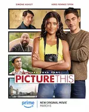
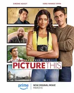
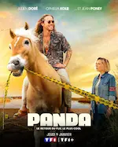
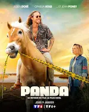
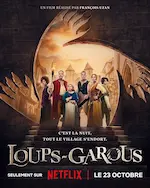
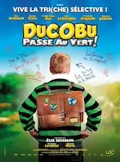
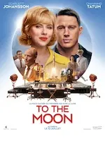
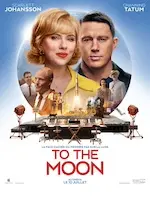
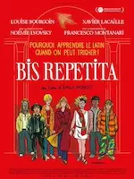
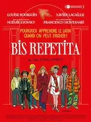

2025
Avril
 



Mars
-
13 —
Amour, famille et fantômes


 L’Amour ouf, ♡ Melle Bottine, Ghosts (UK)
L’Amour ouf, ♡ Melle Bottine, Ghosts (UK) -
01 —
Grimm, CB Strike, Panda

 ♡ Grimm (intégrale), CB Strike (saison 6), Panda (saison 2)
♡ Grimm (intégrale), CB Strike (saison 6), Panda (saison 2)
Février


2024
Décembre


Novembre
-
30 —
Comédies romantiques, magie et autres films


 This time next year, Le bal masqué de Noël, Le nombre magique de Noël, The Merry Gentlemen, The portable door, Ellian et le sortilège, Sharper, Veuillez nous excuser pour la gêne occasionnée
This time next year, Le bal masqué de Noël, Le nombre magique de Noël, The Merry Gentlemen, The portable door, Ellian et le sortilège, Sharper, Veuillez nous excuser pour la gêne occasionnée -
10 —
Séries et animés


 ♡ From, Resident alien, Attack on Titan, ♡ Yuru Camp
♡ From, Resident alien, Attack on Titan, ♡ Yuru Camp -
10 —
Comédies



 Loups-garous, Le médium, Paris à tout prix, ♡ Pourquoi tu souris ?, Wolfs
Loups-garous, Le médium, Paris à tout prix, ♡ Pourquoi tu souris ?, Wolfs -
09 —
Poneys de Noël, romance fantastique et vengeance


 Falling inn love, Lettres magiques au Père Noël, Un ami pour Noël, ♡ Stardust - Le mystère de l'Étoile, Le Comte de Monte Cristo, Speak no Evil, Maurice le chat fabuleux, Joker folie à deux
Falling inn love, Lettres magiques au Père Noël, Un ami pour Noël, ♡ Stardust - Le mystère de l'Étoile, Le Comte de Monte Cristo, Speak no Evil, Maurice le chat fabuleux, Joker folie à deux
Octobre


Septembre


Août
-
31 —
Poneys de Noël à gogo, gloubi-boulga émotionnel et comédie inspirée


 ♡ La Princesse et le bodyguard, La probabilité statistique de l’amour au premier regard, À Noël mon Prince viendra, Love again, Amoureuse de mon meilleur ami, Vice versa 2, ♡ Harold et le crayon magique
♡ La Princesse et le bodyguard, La probabilité statistique de l’amour au premier regard, À Noël mon Prince viendra, Love again, Amoureuse de mon meilleur ami, Vice versa 2, ♡ Harold et le crayon magique -
18 —
Pseudo comédies, presque romance, semblant d’horreur et rencontres

 


 Ducobu passe au vert, Jeff Panacloc - À la poursuite de Jean-Marc, To the Moon, Le mangeur d’âmes, Et plus si affinités, Rose - Petite fée des fleurs
Ducobu passe au vert, Jeff Panacloc - À la poursuite de Jean-Marc, To the Moon, Le mangeur d’âmes, Et plus si affinités, Rose - Petite fée des fleurs -
02 —
Romance, drames, comédies et bestioles
 
 ♡ Drawing Closer, L’imaginaire, Bis Repetita, Gremlins
♡ Drawing Closer, L’imaginaire, Bis Repetita, Gremlins
Juillet
-
25 —
 Drama japonais From 5 to 9
Drama japonais From 5 to 9
-
11 —
Actions & comédie, quelques frissons, poney de Noël et émotions fortes


 Chien et chat, The fall guy, Sleep, Comment rencontrer l’âme sœur en 10 leçons, Love coach malgré moi, Arthur the King
Chien et chat, The fall guy, Sleep, Comment rencontrer l’âme sœur en 10 leçons, Love coach malgré moi, Arthur the King -
05 —
Tournage qui vire au fiasco et intellos asociaux

 Fiasco, The Big Bang Theory
Fiasco, The Big Bang Theory -
04 —
Flics fêlés, aides soignants impliqués, prof dépassé et requins mutants

 Les infaillibles, Maison de retraite 2, Pas de vagues, Sous la Seine
Les infaillibles, Maison de retraite 2, Pas de vagues, Sous la Seine -
04 —
Amis imaginaires, guide à plumes, monstres et rêve plus doux que la réalité


 Blue et compagnie, Le garçon et le héron, Monster High 2, ♡ Le Royaume des Abysses
Blue et compagnie, Le garçon et le héron, Monster High 2, ♡ Le Royaume des Abysses